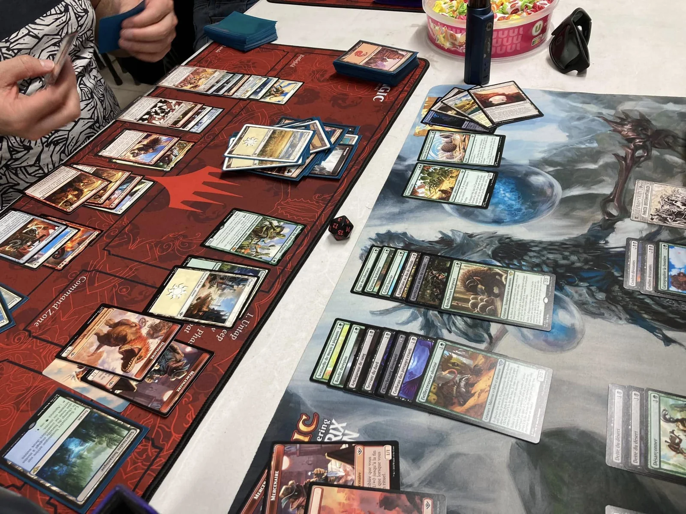
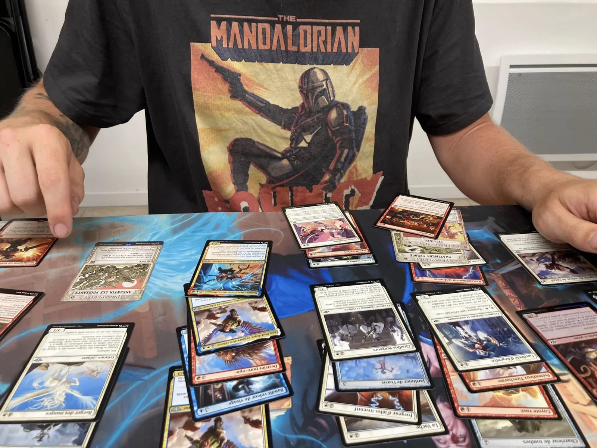
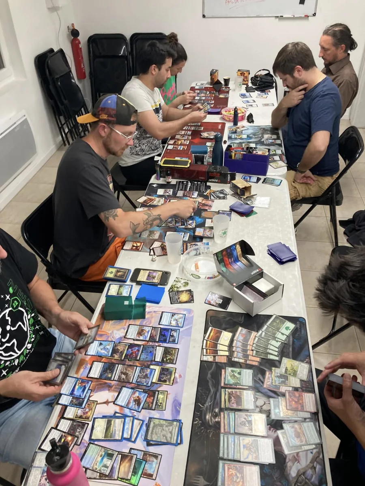

Tester son deck
Affrontez des stratégies différentes, observez ce qui fonctionne et échangez des conseils dans un cadre détendu.
Cartes, decks et découvertes
Venez avec votre deck, une boîte à faire découvrir ou simplement l'envie de jouer. Le Cercle favorise les rencontres, les initiations et les parties amicales.

Ces photos montrent nos propres soirées. Elles ont été prises pendant des parties et événements organisés par le Cercle des Joueurs Paresseux.
Pourquoi venir jouer en club ?
Le club permet de rencontrer d'autres joueurs, de varier les styles de partie et de découvrir un jeu sans devoir constituer seul une communauté complète.
Affrontez des stratégies différentes, observez ce qui fonctionne et échangez des conseils dans un cadre détendu.
Une initiation permet de comprendre le rythme, les cartes et les choix du jeu avant d'investir dans une collection.
Un nouveau groupe peut commencer avec quelques joueurs motivés. Le club offre un lieu régulier où se rencontrer.
Magic: The Gathering et d'autres jeux de cartes peuvent être pratiqués selon les membres présents. Des joueurs peuvent également proposer Lorcana, Altered, Pokémon, Star Wars Unlimited, Flesh and Blood, One Piece ou tout autre jeu de cartes à collectionner, évolutif ou autonome.
Ces noms sont des exemples et non la promesse d'une table régulière chaque vendredi. Le club reste toutefois ouvert à la découverte et peut aider des joueurs intéressés par le même jeu à se rencontrer.
Vous pouvez venir apprendre les bases, reprendre un jeu après une longue pause ou chercher des partenaires pour des parties plus construites. L'objectif est de proposer un cadre accueillant où l'explication et le respect du niveau de chacun passent avant la compétition.
Magic: The Gathering au club
Magic: The Gathering est le jeu de cartes qui revient le plus régulièrement au Cercle, notamment lors des avant-premières et autour de quelques tables de Commander.
Nous participons généralement aux avant-premières Magic: The Gathering pour découvrir les nouvelles extensions dans une ambiance conviviale. Ces rendez-vous permettent d'ouvrir les nouveaux boosters, de construire un deck avec les cartes obtenues et de tester immédiatement les nouvelles mécaniques.
L'esprit reste celui du club : prendre le temps d'expliquer, jouer dans de bonnes conditions et partager la découverte de l'extension.
En dehors des avant-premières, nous jouons aussi au format Commander. Son format multijoueur, ses decks très variés et les interactions autour de la table correspondent bien à l'ambiance du Cercle.
Les parties peuvent accueillir différents niveaux d'expérience, à condition de discuter simplement de la puissance des decks avant de commencer.
Magic est actuellement le jeu de cartes le plus récurrent, mais il ne constitue pas une liste fermée. Nous restons ouverts à toute proposition de jeu de cartes à collectionner, évolutif ou autonome.
Vous pouvez venir avec votre deck, votre collection ou simplement votre curiosité et proposer un jeu que vous souhaitez faire découvrir.
Un échantillon, pas un programme figé
Les avant-premières Magic et les parties de Commander sont les pratiques les plus régulières aujourd'hui, mais les jeux cités sur cette page ne représentent qu'un échantillon de l'activité du club.
Le Cercle des Joueurs Paresseux reste ouvert aux nouvelles propositions. Si vous cherchez des partenaires pour un autre jeu de cartes, vous pouvez venir le présenter, organiser une initiation ou proposer une partie lors d'une rencontre.
Jeux de cartes dans l'ouest montpelliérain
Le Cercle se réunit à Vailhauquès et accueille des joueurs venant de Montpellier, Vailhauquès, Juvignac, Grabels, Gignac, Montarnaud, Combaillaux, Murles, Saint-Georges-d'Orques, Saint-Paul-et-Valmalle et Aniane. La salle dispose de deux parkings à moins de 50 mètres, ce qui facilite les soirées cartes près de Montpellier.
Consulter les trajets et les temps indicatifsNotre état d'esprit
Les jeux cités servent d'exemples. Nous ne les pratiquons pas tous régulièrement et ne garantissons pas une table dédiée chaque semaine. Nous sommes en revanche toujours partants pour apprendre un système, organiser une initiation et accueillir un joueur souhaitant partager son jeu.
Nous rencontrer à VailhauquèsMagic au club
Magic: The Gathering est le jeu de cartes qui revient le plus souvent au Cercle. Les avant-premières sont l’occasion de découvrir une nouvelle extension dans une ambiance détendue, tandis que le Commander rassemble plusieurs joueurs autour de parties plus longues, narratives et riches en interactions.
Les photos montrent la diversité des decks, des tapis et des styles de jeu présents lors de nos soirées. Le club reste naturellement ouvert à d’autres jeux de cartes et aux propositions des membres.

Une autre vue de nos parties
Cette vue rapprochée complète la photographie principale et la vue générale de la salle. Elle permet de mieux distinguer les cartes, les tapis de jeu et le matériel utilisé pendant nos parties, sans répéter les mêmes images sur la page.
